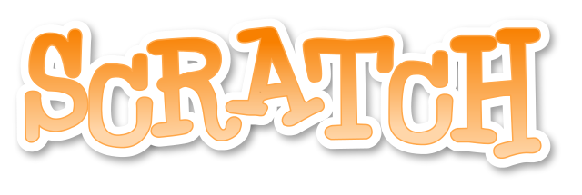
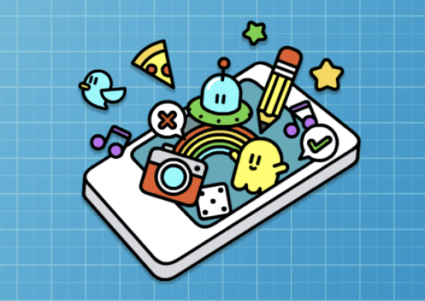
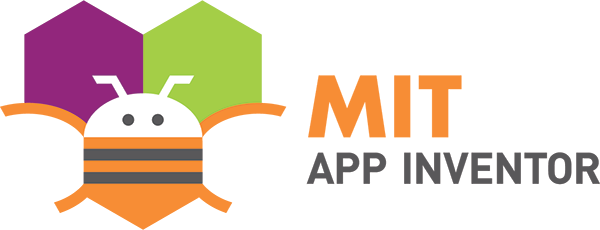
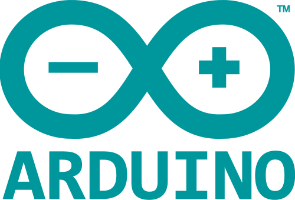
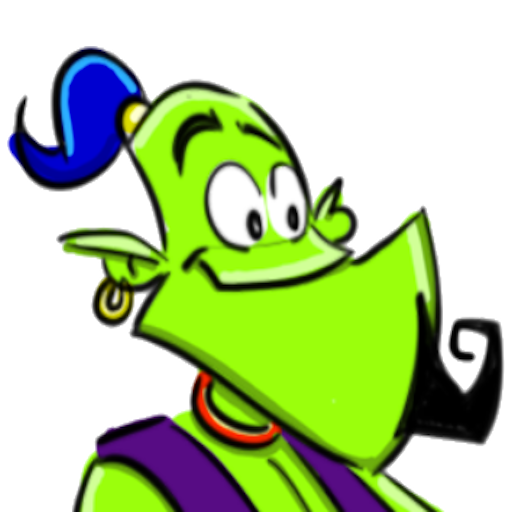

Llenguatges de programació¶
Comparació de diferents llenguatges de programació per a l'ensenyament.
Bloqueig de la programació¶
- Cursos de codi

- Lloc web: Code Studio
- Desenvolupador: Code.org
- Programació: Blocs (basats en Blockly)
- Lliure. Multiplataforma (PC, Apple, Android).
Cursos guiats de diferents nivells, de 4 a 16 anys, i de diferents durades, d’1 a 24 hores.
Ensenyen els fonaments de la programació imperativa i estructurada. Seqüències, bucles, condicionats, variables, funcions i paràmetres.
- Esgarrapar

- Lloc web: Scratch
- Desenvolupador: MIT
- Programació: per blocs
- Per programar: al navegador i al PC
- Multitasca
- Programari gratuït (amb accés al codi). Multiplataforma.
Projecte MIT per ensenyar la programació infantil en un entorn creatiu. La web té multitud de projectes compartits que es poden estudiar i reutilitzar.
Tutorials de Scratch :: ref: `scratch-índex '
- Mblock

- Lloc web: mBlock
- Desenvolupador: MakeBlock, basat en Scratch
- Programació: per blocs
- Al programa: PC i Arduino
- Multitasca
- Programari lliure. Multiplataforma.
Projecte basat en Scratch Offline, que inclou instruccions per a robots Arduino i MakeBlock basats en Arduino.
Es pot programar a Scratch i també podeu fer programes amb blocs per a Arduino. Un cop descarregat a Arduino, els programes són independents i funcionen sense connexió amb el PC.
{kind=link}
Programació dels telèfons intel·ligents¶
Els telèfons intel·ligents Android, els més estesos, estan programats amb el llenguatge Java. Hi ha alternatives més senzilles orientades a l’educació.
- Poma

- Lloc web: Apple
- Desenvolupador: Code.org
- Programació: per blocs o en text de JavaScript
- Gratuït i multiplataforma
- Requereix crear un compte
- Les aplicacions s’executen en qualsevol smartphone ** ** a través del navegador
- Appinventor

- Lloc web: AppInventor
- Desenvolupador: MIT
- Programació: per blocs
- Per programar: telèfons intel·ligents
{kind=link}
{kind=link}
Programació de text¶
Aquests llenguatges tenen un nivell més elevat de dificultat a l’hora de programar el codi d’escriptura en format de text. Requereix aprendre una gramàtica més complicada que un simple moviment de blocs. Com a avantatge, són molt més potents i flexibles.
Arduino¶
{kind=link}

- Lloc web: Arduino
- Desenvolupador: Arduino
- Programació: text, basat en el llenguatge C
- Al programa: Arduino Electronic Plats i similars
- Programari gratuït
- Un gran nombre de tutorials de diversos nivells i qualitat, orientats als projectes de bricolatge
Arduino està programat en llenguatge C amb addicions per facilitar -ho. Està dirigit a la programació de circuits electrònics, muntatges de fabricants i robots. El seu objectiu és portar la programació de microcontroladors als estudiants sense preparació tècnica.
Python¶
- Lloc web: Python
- Desenvolupador: Python Foundation
- Programació: text
- Al programa: PC
- Programari lliure. Multiplataforma
- Molts tutorials de molts nivells, també en castellà.
Tutorials:
Llenguatge multiparadigma, molt senzill de programar i comprendre. És l’idioma preferit per moltes escoles i universitats del món [1] _ ensenyar al programa. Amb aquest idioma, podeu programar projectes des de zero amb una gran velocitat i senzillesa.
Python és un dels idiomes més utilitzats i més populars actuals [2] _. Està recolzat per Google i és el llenguatge seleccionat per desenvolupar les seves aplicacions d’intel·ligència artificial i d’aprenentatge automàtic, el futur de la informàtica.
Té multitud de tutorials de tot tipus, de tots els nivells, en anglès i en castellà i en format gratuït i lliure.
El pygame facilita molt la tasca de programar entorns gràfics i jocs d'ordinador i ofereix una multitud d'exemples didàctics i pràctics de programes creats per diferents autors.
Al seu torn, l’entorn de la tortuga python <https://docs.python.org/3.3/libry/turtle.html>`__ emula l’entorn de l’idioma de logotip, creat per` Seymour papert <https://es.wikipèdia.org/wiki/seymour_ppert> `` `` `` `` `` `` `` `` `` `` `` `` `` `` ` `` `` `` `` `` `` `Mit per ensenyar als nens a programar.
Preparació¶
- Lloc web: Processament
- Desenvolupador: Processing Foundation
- Programació: text. Basat en el llenguatge Java
- Per programar: PC i telèfons intel·ligents
- Grans possibilitats gràfiques
- Programari lliure. Multiplataforma
- Tutorials només en anglès i a nivell de secundària.
Tutorials:
El processament és un entorn de programació Java que ofereix moltes instal·lacions per apropar la programació als artistes que permeten aplicacions visuals amb dibuixos i imatges a la pantalla.
Quan es programen a Java, es poden penjar aplicacions a telèfons intel·ligents i tauletes basades en Android.
L’inconvenient d’aquest idioma és que els tutorials es troben en anglès i tenen un nivell relativament alt de secundària. D'altra banda, amb aquest idioma és difícil començar a la programació d'aprenentatge.
Aprenentatge automàtic¶
L’aprenentatge automàtic o l’aprenentatge automàtic és una branca de la intel·ligència artificial, molt de moda darrerament, que és capaç de generar models que puguin predir i classificar dades d’un aprenentatge guiat o autònom.

A la pàgina 'LearningMl <https://web.learningml.org/> __, podeu llegir una explicació més exhaustiva i podeu jugar amb models d'aprenentatge de màquines senzilles i fàcilment formades per identificar textos i imatges.
El llenguatge de programació utilitzat és Scratch 3 amb l’addició de les instruccions necessàries per utilitzar els models ML un cop formats.
Altres recursos a Internet¶
Llenguatges de programació educativa. <https://www.educntrepuntocero.com/recursos/programacion/leguajes-programacion-educiva-alternativos-a-cratch/35925.html> ` `` `` `` `` `` `` `
| [1] | Les escoles que utilitzen Python |
| [2] | Índex tiobe de llenguatges de programació |